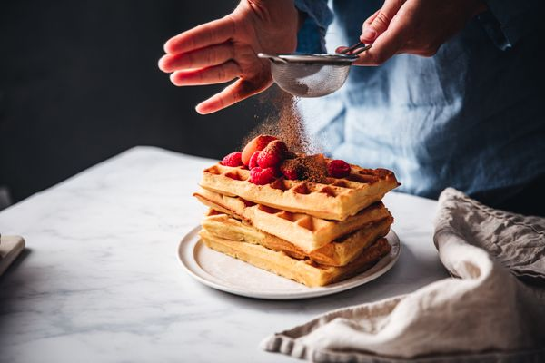

Home
Waffles

Description
Les gauffres sont un dessert simple mais incontournables.
Sa recette est similaire a beaucoup d'autres, mais sa forme lui donne une texture particuliere que beaucoup sauront apprecier
Ingredients
- 200gr de farine
- 20gr de sucre
- 20gr de beurre
- 1 pincee de sel
- 3 oeufs
- 25 cl de lait
Etapes de Preparations
- Mettre la farine, le sucre, les jaunes d'oeuf et le beurre ramolli dans un saladier
- Ajouter le lait au fur et a mesure et melanger pour eviter les grumeaux
- Battre les blancs en neige avec une pincee de sel et l'ajouter delicatement a la preparation
- Cuire le tout dans un gaufrier legerement beurre